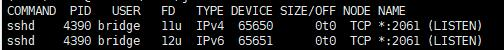

<!DOCTYPE html>
<html lang="zh" class="loading">
<head><meta name="generator" content="Hexo 3.9.0">
    <meta charset="UTF-8">
    <meta http-equiv="X-UA-Compatible" content="IE=edge,chrome=1">
    <meta name="viewport" content="width=device-width, minimum-scale=1.0, maximum-scale=1.0, user-scalable=no">
    <title>SSH反向隧道的搭建与原理 - WhiteRobe&#39;s Blog</title>
    <meta name="apple-mobile-web-app-capable" content="yes">
    <meta name="apple-mobile-web-app-status-bar-style" content="black-translucent">
    <meta name="google" content="notranslate">
    <link href="https://cdnjs.cloudflare.com/ajax/libs/KaTeX/0.11.0/katex.min.css" rel="stylesheet">
    <meta name="keywords" content="WhiteRobe, Blog,"> 
    <meta name="description" content="着眼实例，从最简单的开始；你觉得再简单不过的东西，或许在别人眼里那就是悬崖。而我，愿作那攀岩绳。, 基本概念
SSH反向隧道可以实现SSH的内网穿透，其作用原理是：

内网机器BBB监听公网服务器AAA的端口PAP_APA​；
一旦公网机器AAA收到来自端口PAP_APA​的请求，则转发/映射到,"> 
    <meta name="author" content="WhiteRobe"> 
    <link rel="alternative" href="atom.xml" title="WhiteRobe&#39;s Blog" type="application/atom+xml"> 
    <link rel="icon" href="/img/favicon.png"> 
    <link rel="stylesheet" href="//cdn.jsdelivr.net/npm/gitalk@1/dist/gitalk.css">
    <link rel="stylesheet" href="/css/animate.css">
    <link rel="stylesheet" href="/css/fira_code.css">
    <link rel="stylesheet" href="/css/diaspora.css">
    <script async src="https://busuanzi.ibruce.info/busuanzi/2.3/busuanzi.pure.mini.js"></script>
    
        <!--站内搜索API-->
        <script src="https://cdn.jsdelivr.net/algoliasearch/3/algoliasearch.min.js"></script>
        <link rel="stylesheet" href="https://cdn.jsdelivr.net/npm/instantsearch.css@7.3.1/themes/algolia-min.css" integrity="sha256-HB49n/BZjuqiCtQQf49OdZn63XuKFaxcIHWf0HNKte8=" crossorigin="anonymous">
        <script src="https://cdn.jsdelivr.net/npm/instantsearch.js@3.4.0/dist/instantsearch.production.min.js" integrity="sha256-pM0n88cBFRHpSn0N26ETsQdwpA7WAXJDvkHeCLh3ujI=" crossorigin="anonymous"></script>
    
    <!-- <script async src="//pagead2.googlesyndication.com/pagead/js/adsbygoogle.js"></script>
    <script>
          // No more ads!
         (adsbygoogle = window.adsbygoogle || []).push({
              google_ad_client: "ca-pub-8691406134231910",
              enable_page_level_ads: true
         });
    </script>
    <script async custom-element="amp-auto-ads"
        src="https://cdn.ampproject.org/v0/amp-auto-ads-0.1.js">
    </script> -->
</head>
</html>
<body class="loading">
    <span id="config-title" style="display:none">WhiteRobe&#39;s Blog</span>
    <div id="loader"></div>
    <div id="single">
    <div id="top" style="display: block; display: block;position: fixed; top: 0px;">
    <div class="bar" style="width: 0;"></div>
    <a class="icon-home image-icon" href="javascript:;" data-url="https://blog.whiterobe.top"></a>
    <div title="播放/暂停" class="icon-play"></div>
    <h3 class="subtitle">SSH反向隧道的搭建与原理</h3>
    <div class="social">
        <!--<div class="like-icon">-->
            <!--<a href="javascript:;" class="likeThis active"><span class="icon-like"></span><span class="count">76</span></a>-->
        <!--</div>-->
        <div style="font-size: 1rem;margin-right: -10px">
          分享此文：
        </div>
        <div>
          <div class="share">
              <a title="获取文章地址二维码" class="icon-scan" href="javascript:;"></a>
          </div>
          <div id="qr"></div>
        </div>
    </div>
    <div class="scrollbar"></div>
</div>

    <div class="section" style="margin-top: 50px">
        <div class="article">
    <div class='main'>
        <h1 class="title">SSH反向隧道的搭建与原理</h1>
        <div class="stuff">
            <span>九月 13, 2019</span>
            <span id="busuanzi_container_page_pv" class="busuanzi_page" style="display:none">本文总阅读量<div id="busuanzi_value_page_pv" style="display: inline;">1</div>次</span>
            
  <ul class="post-tags-list"><li class="post-tags-list-item"><a class="post-tags-list-link" href="/tags/ssh/">ssh</a></li><li class="post-tags-list-item"><a class="post-tags-list-link" href="/tags/反向隧道/">反向隧道</a></li></ul>


        </div>
        <div class="low-resolution-warn-info">当前设备屏幕尺寸过小，推荐使用PC模式浏览。</div>
        <div class="content markdown">
            <h1 id="基本概念"><a class="markdownIt-Anchor" href="#基本概念"></a> 基本概念</h1>
<p>SSH反向隧道可以实现SSH的内网穿透，其作用原理是：</p>
<ul>
<li>内网机器<span class="katex"><span class="katex-mathml"><math><semantics><mrow><mi>B</mi></mrow><annotation encoding="application/x-tex">B</annotation></semantics></math></span><span class="katex-html" aria-hidden="true"><span class="base"><span class="strut" style="height:0.68333em;vertical-align:0em;"></span><span class="mord mathdefault" style="margin-right:0.05017em;">B</span></span></span></span>监听公网服务器<span class="katex"><span class="katex-mathml"><math><semantics><mrow><mi>A</mi></mrow><annotation encoding="application/x-tex">A</annotation></semantics></math></span><span class="katex-html" aria-hidden="true"><span class="base"><span class="strut" style="height:0.68333em;vertical-align:0em;"></span><span class="mord mathdefault">A</span></span></span></span>的端口<span class="katex"><span class="katex-mathml"><math><semantics><mrow><msub><mi>P</mi><mi>A</mi></msub></mrow><annotation encoding="application/x-tex">P_A</annotation></semantics></math></span><span class="katex-html" aria-hidden="true"><span class="base"><span class="strut" style="height:0.83333em;vertical-align:-0.15em;"></span><span class="mord"><span class="mord mathdefault" style="margin-right:0.13889em;">P</span><span class="msupsub"><span class="vlist-t vlist-t2"><span class="vlist-r"><span class="vlist" style="height:0.32833099999999993em;"><span style="top:-2.5500000000000003em;margin-left:-0.13889em;margin-right:0.05em;"><span class="pstrut" style="height:2.7em;"></span><span class="sizing reset-size6 size3 mtight"><span class="mord mathdefault mtight">A</span></span></span></span><span class="vlist-s">​</span></span><span class="vlist-r"><span class="vlist" style="height:0.15em;"><span></span></span></span></span></span></span></span></span></span>；</li>
<li>一旦公网机器<span class="katex"><span class="katex-mathml"><math><semantics><mrow><mi>A</mi></mrow><annotation encoding="application/x-tex">A</annotation></semantics></math></span><span class="katex-html" aria-hidden="true"><span class="base"><span class="strut" style="height:0.68333em;vertical-align:0em;"></span><span class="mord mathdefault">A</span></span></span></span>收到来自端口<span class="katex"><span class="katex-mathml"><math><semantics><mrow><msub><mi>P</mi><mi>A</mi></msub></mrow><annotation encoding="application/x-tex">P_A</annotation></semantics></math></span><span class="katex-html" aria-hidden="true"><span class="base"><span class="strut" style="height:0.83333em;vertical-align:-0.15em;"></span><span class="mord"><span class="mord mathdefault" style="margin-right:0.13889em;">P</span><span class="msupsub"><span class="vlist-t vlist-t2"><span class="vlist-r"><span class="vlist" style="height:0.32833099999999993em;"><span style="top:-2.5500000000000003em;margin-left:-0.13889em;margin-right:0.05em;"><span class="pstrut" style="height:2.7em;"></span><span class="sizing reset-size6 size3 mtight"><span class="mord mathdefault mtight">A</span></span></span></span><span class="vlist-s">​</span></span><span class="vlist-r"><span class="vlist" style="height:0.15em;"><span></span></span></span></span></span></span></span></span></span>的请求，则转发/映射到内网机器<span class="katex"><span class="katex-mathml"><math><semantics><mrow><mi>B</mi></mrow><annotation encoding="application/x-tex">B</annotation></semantics></math></span><span class="katex-html" aria-hidden="true"><span class="base"><span class="strut" style="height:0.68333em;vertical-align:0em;"></span><span class="mord mathdefault" style="margin-right:0.05017em;">B</span></span></span></span>的端口<span class="katex"><span class="katex-mathml"><math><semantics><mrow><msub><mi>P</mi><mi>B</mi></msub></mrow><annotation encoding="application/x-tex">P_B</annotation></semantics></math></span><span class="katex-html" aria-hidden="true"><span class="base"><span class="strut" style="height:0.83333em;vertical-align:-0.15em;"></span><span class="mord"><span class="mord mathdefault" style="margin-right:0.13889em;">P</span><span class="msupsub"><span class="vlist-t vlist-t2"><span class="vlist-r"><span class="vlist" style="height:0.32833099999999993em;"><span style="top:-2.5500000000000003em;margin-left:-0.13889em;margin-right:0.05em;"><span class="pstrut" style="height:2.7em;"></span><span class="sizing reset-size6 size3 mtight"><span class="mord mathdefault mtight" style="margin-right:0.05017em;">B</span></span></span></span><span class="vlist-s">​</span></span><span class="vlist-r"><span class="vlist" style="height:0.15em;"><span></span></span></span></span></span></span></span></span></span>(内网机器<span class="katex"><span class="katex-mathml"><math><semantics><mrow><mi>B</mi></mrow><annotation encoding="application/x-tex">B</annotation></semantics></math></span><span class="katex-html" aria-hidden="true"><span class="base"><span class="strut" style="height:0.68333em;vertical-align:0em;"></span><span class="mord mathdefault" style="margin-right:0.05017em;">B</span></span></span></span>的ssh默认端口为22)</li>
</ul>
<blockquote>
<p>注意： 除了内网机器的端口<span class="katex"><span class="katex-mathml"><math><semantics><mrow><msub><mi>P</mi><mi>B</mi></msub></mrow><annotation encoding="application/x-tex">P_B</annotation></semantics></math></span><span class="katex-html" aria-hidden="true"><span class="base"><span class="strut" style="height:0.83333em;vertical-align:-0.15em;"></span><span class="mord"><span class="mord mathdefault" style="margin-right:0.13889em;">P</span><span class="msupsub"><span class="vlist-t vlist-t2"><span class="vlist-r"><span class="vlist" style="height:0.32833099999999993em;"><span style="top:-2.5500000000000003em;margin-left:-0.13889em;margin-right:0.05em;"><span class="pstrut" style="height:2.7em;"></span><span class="sizing reset-size6 size3 mtight"><span class="mord mathdefault mtight" style="margin-right:0.05017em;">B</span></span></span></span><span class="vlist-s">​</span></span><span class="vlist-r"><span class="vlist" style="height:0.15em;"><span></span></span></span></span></span></span></span></span></span>需要为<code>/etc/ssh/sshd_config</code></p>
</blockquote>
<h2 id="设备概览"><a class="markdownIt-Anchor" href="#设备概览"></a> 设备概览</h2>
<table>
<thead>
<tr>
<th style="text-align:center">服务器代号</th>
<th style="text-align:center">IP</th>
<th style="text-align:center">对外暴露的SSH端口</th>
</tr>
</thead>
<tbody>
<tr>
<td style="text-align:center">A(公网)</td>
<td style="text-align:center">114.114.114.114</td>
<td style="text-align:center">2061</td>
</tr>
<tr>
<td style="text-align:center">B(内网)</td>
<td style="text-align:center">192.168.1.101</td>
<td style="text-align:center">22</td>
</tr>
<tr>
<td style="text-align:center">C(内网)</td>
<td style="text-align:center">192.168.1.102</td>
<td style="text-align:center">22</td>
</tr>
<tr>
<td style="text-align:center">…(内网)</td>
<td style="text-align:center">…</td>
<td style="text-align:center">…</td>
</tr>
</tbody>
</table>
<h2 id="适用场景"><a class="markdownIt-Anchor" href="#适用场景"></a> 适用场景</h2>
<p>假设我现在有N台内网机器，只有一台公网机器<span class="katex"><span class="katex-mathml"><math><semantics><mrow><mi>A</mi></mrow><annotation encoding="application/x-tex">A</annotation></semantics></math></span><span class="katex-html" aria-hidden="true"><span class="base"><span class="strut" style="height:0.68333em;vertical-align:0em;"></span><span class="mord mathdefault">A</span></span></span></span>，现在我需要利用公网机器<span class="katex"><span class="katex-mathml"><math><semantics><mrow><mi>A</mi></mrow><annotation encoding="application/x-tex">A</annotation></semantics></math></span><span class="katex-html" aria-hidden="true"><span class="base"><span class="strut" style="height:0.68333em;vertical-align:0em;"></span><span class="mord mathdefault">A</span></span></span></span>作为中转站，操作内网机器<span class="katex"><span class="katex-mathml"><math><semantics><mrow><mi>B</mi><mo separator="true">,</mo><mi>C</mi><mo separator="true">,</mo><mi>D</mi><mo separator="true">,</mo><mi>E</mi><mo separator="true">,</mo><mi>F</mi></mrow><annotation encoding="application/x-tex">B,C,D,E,F</annotation></semantics></math></span><span class="katex-html" aria-hidden="true"><span class="base"><span class="strut" style="height:0.8777699999999999em;vertical-align:-0.19444em;"></span><span class="mord mathdefault" style="margin-right:0.05017em;">B</span><span class="mpunct">,</span><span class="mspace" style="margin-right:0.16666666666666666em;"></span><span class="mord mathdefault" style="margin-right:0.07153em;">C</span><span class="mpunct">,</span><span class="mspace" style="margin-right:0.16666666666666666em;"></span><span class="mord mathdefault" style="margin-right:0.02778em;">D</span><span class="mpunct">,</span><span class="mspace" style="margin-right:0.16666666666666666em;"></span><span class="mord mathdefault" style="margin-right:0.05764em;">E</span><span class="mpunct">,</span><span class="mspace" style="margin-right:0.16666666666666666em;"></span><span class="mord mathdefault" style="margin-right:0.13889em;">F</span></span></span></span></p>
<h1 id="搭建反向隧道"><a class="markdownIt-Anchor" href="#搭建反向隧道"></a> 搭建反向隧道</h1>
<p>下面，我们对内网机器<span class="katex"><span class="katex-mathml"><math><semantics><mrow><mi>B</mi></mrow><annotation encoding="application/x-tex">B</annotation></semantics></math></span><span class="katex-html" aria-hidden="true"><span class="base"><span class="strut" style="height:0.68333em;vertical-align:0em;"></span><span class="mord mathdefault" style="margin-right:0.05017em;">B</span></span></span></span>的SSH端口<code>22</code>进行穿透。所有操作默认采用<code>root</code>权限。</p>
<p>文章分为三个部分：</p>
<ol>
<li>正向代理(公网机器操作)</li>
<li>反向代理(内网机器操作)</li>
<li>稳定机器及开机自动建立反向隧道(内网机器操作)</li>
</ol>
<h2 id="公网机器配置"><a class="markdownIt-Anchor" href="#公网机器配置"></a> 公网机器配置</h2>
<h3 id="正向代理"><a class="markdownIt-Anchor" href="#正向代理"></a> 正向代理</h3>
<p>当你知道内网机器IP时，你可以如下配置：</p>
<figure class="highlight shell"><table><tr><td class="gutter"><pre><span class="line">1</span><br></pre></td><td class="code"><pre><span class="line">ssh -fCNL &lt;内网机器B的IP&gt;:&lt;内网机器B的端口，如22&gt;:localhost:&lt;公网机器A的端口，如2601&gt; localhost</span><br></pre></td></tr></table></figure>
<p>其中ssh指令的各参数意义为：</p>
<blockquote>
<p>-f 后台执行ssh指令<br>
-C 允许压缩数据<br>
-N 不执行远程指令<br>
-R 将远程主机(服务器)的某个端口转发到本地端指定机器的指定端口<br>
-L 将本地机(客户机)的某个端口转发到远端指定机器的指定端口<br>
-p 指定远程主机的端口</p>
</blockquote>
<p>但是，如果内网服务器<span class="katex"><span class="katex-mathml"><math><semantics><mrow><mi>B</mi></mrow><annotation encoding="application/x-tex">B</annotation></semantics></math></span><span class="katex-html" aria-hidden="true"><span class="base"><span class="strut" style="height:0.68333em;vertical-align:0em;"></span><span class="mord mathdefault" style="margin-right:0.05017em;">B</span></span></span></span>采用DHCP或者分布在两个内网中，很难锁定这个IP的值。</p>
<h3 id="开放权限"><a class="markdownIt-Anchor" href="#开放权限"></a> 开放权限</h3>
<p>这种情况下，我们可以修改公网机器<span class="katex"><span class="katex-mathml"><math><semantics><mrow><mi>A</mi></mrow><annotation encoding="application/x-tex">A</annotation></semantics></math></span><span class="katex-html" aria-hidden="true"><span class="base"><span class="strut" style="height:0.68333em;vertical-align:0em;"></span><span class="mord mathdefault">A</span></span></span></span>的SSH配置文件<code>/etc/ssh/sshd_config</code>，添加/修改以下内容：</p>
<figure class="highlight plain"><table><tr><td class="gutter"><pre><span class="line">1</span><br></pre></td><td class="code"><pre><span class="line">GatewayPorts yes</span><br></pre></td></tr></table></figure>
<p>然后刷新一下服务:</p>
<figure class="highlight shell"><table><tr><td class="gutter"><pre><span class="line">1</span><br></pre></td><td class="code"><pre><span class="line">service sshd restart</span><br></pre></td></tr></table></figure>
<hr>
<p>[推荐方法]或者，依旧采用ssh正向代理指令：(该方法需要设一下开机自启，详见下)</p>
<figure class="highlight shell"><table><tr><td class="gutter"><pre><span class="line">1</span><br></pre></td><td class="code"><pre><span class="line">ssh -fCNL *:&lt;内网机器B的端口，如22&gt;:localhost:&lt;公网机器A的端口，如2601&gt; localhost</span><br></pre></td></tr></table></figure>
<p>以上两种方法都可以把被监听的端口开放/绑定到任意IP<code>0.0.0.0</code>上。</p>
<h2 id="内网机器配置"><a class="markdownIt-Anchor" href="#内网机器配置"></a> 内网机器配置</h2>
<p>我们假设<span class="katex"><span class="katex-mathml"><math><semantics><mrow><msub><mi>P</mi><mi>A</mi></msub></mrow><annotation encoding="application/x-tex">P_A</annotation></semantics></math></span><span class="katex-html" aria-hidden="true"><span class="base"><span class="strut" style="height:0.83333em;vertical-align:-0.15em;"></span><span class="mord"><span class="mord mathdefault" style="margin-right:0.13889em;">P</span><span class="msupsub"><span class="vlist-t vlist-t2"><span class="vlist-r"><span class="vlist" style="height:0.32833099999999993em;"><span style="top:-2.5500000000000003em;margin-left:-0.13889em;margin-right:0.05em;"><span class="pstrut" style="height:2.7em;"></span><span class="sizing reset-size6 size3 mtight"><span class="mord mathdefault mtight">A</span></span></span></span><span class="vlist-s">​</span></span><span class="vlist-r"><span class="vlist" style="height:0.15em;"><span></span></span></span></span></span></span></span></span></span>为<code>2061</code>，即访问公网机器端口<code>2061</code>时会自动转发到内网端口<code>22</code>实现ssh登录。</p>
<h3 id="反向代理"><a class="markdownIt-Anchor" href="#反向代理"></a> 反向代理</h3>
<blockquote>
<p>注意，推荐利用<code>autossh</code>建立反向隧道，而不是<code>ssh</code>指令，详见下文。</p>
</blockquote>
<figure class="highlight shell"><table><tr><td class="gutter"><pre><span class="line">1</span><br></pre></td><td class="code"><pre><span class="line">ssh -fCNR 2061:localhost:22 &lt;公网机器A的ssh登录用户名&gt;@&lt;公网机器A的IP&gt;</span><br></pre></td></tr></table></figure>
<ul>
<li><strong>&lt;公网机器A的ssh登录用户名&gt;</strong>： 指的是在公网机器<span class="katex"><span class="katex-mathml"><math><semantics><mrow><mi>A</mi></mrow><annotation encoding="application/x-tex">A</annotation></semantics></math></span><span class="katex-html" aria-hidden="true"><span class="base"><span class="strut" style="height:0.68333em;vertical-align:0em;"></span><span class="mord mathdefault">A</span></span></span></span>上负责转发请求的用户，可以直接使用<code>root</code>，或者新建一个用户<code>bridge</code>。执行上述命令后会让你输入登录公网机器的ssh密码。</li>
</ul>
<p>在公网机器A上执行指令：<code>lsof -i:&lt;公网机器A被监听的端口，如2061&gt;</code>，会看到：</p>
<p></p>
<p>此时，可以尝试进行反向登录了：</p>
<figure class="highlight shell"><table><tr><td class="gutter"><pre><span class="line">1</span><br></pre></td><td class="code"><pre><span class="line">ssh &lt;公网机器A的IP&gt; -p &lt;公网机器A的端口&gt;</span><br></pre></td></tr></table></figure>
<p>理论上将会顺利穿透到内网机器，否则请检查防火墙的设置。</p>
<ul>
<li>你可以在内网机器使用指令<code>pus -aux | grep ssh</code>来查看相关进程，用<code>kill -p &lt;PID&gt;</code>关闭相关反向隧道的进程。</li>
</ul>
<h3 id="稳定连接与开机自启"><a class="markdownIt-Anchor" href="#稳定连接与开机自启"></a> 稳定连接与开机自启</h3>
<p>由于SSH在一段时间没有数据包之后，会自动断开，所以我们需要设置一下<code>autossh</code>。</p>
<p><em>(以下操作均在内网机器B进行)</em></p>
<ol>
<li>首先是进行下载：<code>apt-get install autossh</code>，</li>
<li>然后添加我们内网机器的ssh-key到公网以实现自动登陆：<code>ssh-copy-id &lt;公网机器A的ssh登录用户名&gt;@&lt;公网机器A的IP&gt;</code>。</li>
<li>(Options)如果本机不存在key，你需要先执行<code>ssh-keygen -t rsa -C &quot;your_email@example.com&quot;</code>再进行第二步。</li>
<li>利用autossh建立反向隧道：</li>
</ol>
<figure class="highlight shell"><table><tr><td class="gutter"><pre><span class="line">1</span><br></pre></td><td class="code"><pre><span class="line">autossh -M 55555  -fCNR 2061:localhost:22 &lt;公网机器A的ssh登录用户名&gt;@&lt;公网机器A的IP&gt;</span><br></pre></td></tr></table></figure>
<blockquote>
<p><code>autossh</code>和与<code>ssh</code>直接建立反向隧道的指令并无太大不同，只不过添加了一个端口用于进行<strong>心跳包</strong>的发送，即<code>-M &lt;port&gt;</code>(样例中为<code>55555</code>端口)</p>
</blockquote>
<p>接下来，还需要设置开机自启：(<code>/etc/rc.local</code>文件根据系统版本有所不同，请自行搜索)</p>
<figure class="highlight shell"><table><tr><td class="gutter"><pre><span class="line">1</span><br></pre></td><td class="code"><pre><span class="line">vim /etc/rc.local</span><br></pre></td></tr></table></figure>
<p>添加上述<code>autossh</code>指令即可。</p>

            <!--[if lt IE 9]><script>document.createElement('audio');</script><![endif]-->
            <audio id="audio" loop="1" preload="auto" controls="controls" data-autoplay="false">
                <source type="audio/mpeg" src="">
            </audio>
            
                <ul id="audio-list" style="display:none">
                    
                        
                            <li title='0' data-url='https://gitee.com/shenpibaipao/wr-diaspora/raw/master/source/audio/jinyecheng.mp3'></li>
                        
                    
                        
                            <li title='1' data-url='https://gitee.com/shenpibaipao/wr-diaspora/raw/master/source/audio/juhuatai.mp3'></li>
                        
                    
                        
                            <li title='2' data-url='https://gitee.com/shenpibaipao/wr-diaspora/raw/master/source/audio/MapleStory.mp3'></li>
                        
                    
                </ul>
            
        </div>
        
    <div id='gitalk-container' class="comment link"
        data-ae='true'
        data-ci='5b763306cd7b9d9c3981'
        data-cs='c31e9bf78a807055f5439caea747b09d1d9c8f18'
        data-r='image-blog.io'
        data-o='WhiteRobe'
        data-a='WhiteRobe'
        data-d='false'
    >查看评论</div>


    </div>
    
        <div class='side'>
            <ol class="toc"><li class="toc-item toc-level-1"><a class="toc-link" href="#基本概念"><span class="toc-number">1.</span> <span class="toc-text"> 基本概念</span></a><ol class="toc-child"><li class="toc-item toc-level-2"><a class="toc-link" href="#设备概览"><span class="toc-number">1.1.</span> <span class="toc-text"> 设备概览</span></a></li><li class="toc-item toc-level-2"><a class="toc-link" href="#适用场景"><span class="toc-number">1.2.</span> <span class="toc-text"> 适用场景</span></a></li></ol></li><li class="toc-item toc-level-1"><a class="toc-link" href="#搭建反向隧道"><span class="toc-number">2.</span> <span class="toc-text"> 搭建反向隧道</span></a><ol class="toc-child"><li class="toc-item toc-level-2"><a class="toc-link" href="#公网机器配置"><span class="toc-number">2.1.</span> <span class="toc-text"> 公网机器配置</span></a><ol class="toc-child"><li class="toc-item toc-level-3"><a class="toc-link" href="#正向代理"><span class="toc-number">2.1.1.</span> <span class="toc-text"> 正向代理</span></a></li><li class="toc-item toc-level-3"><a class="toc-link" href="#开放权限"><span class="toc-number">2.1.2.</span> <span class="toc-text"> 开放权限</span></a></li></ol></li><li class="toc-item toc-level-2"><a class="toc-link" href="#内网机器配置"><span class="toc-number">2.2.</span> <span class="toc-text"> 内网机器配置</span></a><ol class="toc-child"><li class="toc-item toc-level-3"><a class="toc-link" href="#反向代理"><span class="toc-number">2.2.1.</span> <span class="toc-text"> 反向代理</span></a></li><li class="toc-item toc-level-3"><a class="toc-link" href="#稳定连接与开机自启"><span class="toc-number">2.2.2.</span> <span class="toc-text"> 稳定连接与开机自启</span></a></li></ol></li></ol></li></ol>
        </div>
    
</div>


    </div>
    <!--下悬浮返回键-->
    <div style="background: white; height:30px; width: 30px; border-radius: 16px; position: fixed; bottom: 1.5rem; right: 1.5rem; border: 2px solid rgba(0, 0, 0, 0.5)">
      <a class="icon-left image-icon" style="left:4px; top:4px" href="javascript:history.back()"></a>
    </div>
</div>
</body>
<script src="//cdn.jsdelivr.net/npm/gitalk@1/dist/gitalk.min.js"></script>
<script src="//lib.baomitu.com/jquery/1.8.3/jquery.min.js"></script>
<script src="/js/plugin.js"></script>
<script src="/js/diaspora.js"></script>
<link rel="stylesheet" href="/photoswipe/photoswipe.css">
<link rel="stylesheet" href="/photoswipe/default-skin/default-skin.css">
<script src="/photoswipe/photoswipe.min.js"></script>
<script src="/photoswipe/photoswipe-ui-default.min.js"></script>

<!-- Root element of PhotoSwipe. Must have class pswp. -->
<div class="pswp" tabindex="-1" role="dialog" aria-hidden="true">
    <!-- Background of PhotoSwipe. 
         It's a separate element as animating opacity is faster than rgba(). -->
    <div class="pswp__bg"></div>
    <!-- Slides wrapper with overflow:hidden. -->
    <div class="pswp__scroll-wrap">
        <!-- Container that holds slides. 
            PhotoSwipe keeps only 3 of them in the DOM to save memory.
            Don't modify these 3 pswp__item elements, data is added later on. -->
        <div class="pswp__container">
            <div class="pswp__item"></div>
            <div class="pswp__item"></div>
            <div class="pswp__item"></div>
        </div>
        <!-- Default (PhotoSwipeUI_Default) interface on top of sliding area. Can be changed. -->
        <div class="pswp__ui pswp__ui--hidden">
            <div class="pswp__top-bar">
                <!--  Controls are self-explanatory. Order can be changed. -->
                <div class="pswp__counter"></div>
                <button class="pswp__button pswp__button--close" title="Close (Esc)"></button>
                <button class="pswp__button pswp__button--share" title="Share"></button>
                <button class="pswp__button pswp__button--fs" title="Toggle fullscreen"></button>
                <button class="pswp__button pswp__button--zoom" title="Zoom in/out"></button>
                <!-- Preloader demo http://codepen.io/dimsemenov/pen/yyBWoR -->
                <!-- element will get class pswp__preloader--active when preloader is running -->
                <div class="pswp__preloader">
                    <div class="pswp__preloader__icn">
                      <div class="pswp__preloader__cut">
                        <div class="pswp__preloader__donut"></div>
                      </div>
                    </div>
                </div>
            </div>
            <div class="pswp__share-modal pswp__share-modal--hidden pswp__single-tap">
                <div class="pswp__share-tooltip"></div> 
            </div>
            <button class="pswp__button pswp__button--arrow--left" title="Previous (arrow left)">
            </button>
            <button class="pswp__button pswp__button--arrow--right" title="Next (arrow right)">
            </button>
            <div class="pswp__caption">
                <div class="pswp__caption__center"></div>
            </div>
        </div>
    </div>
</div>


</html>
